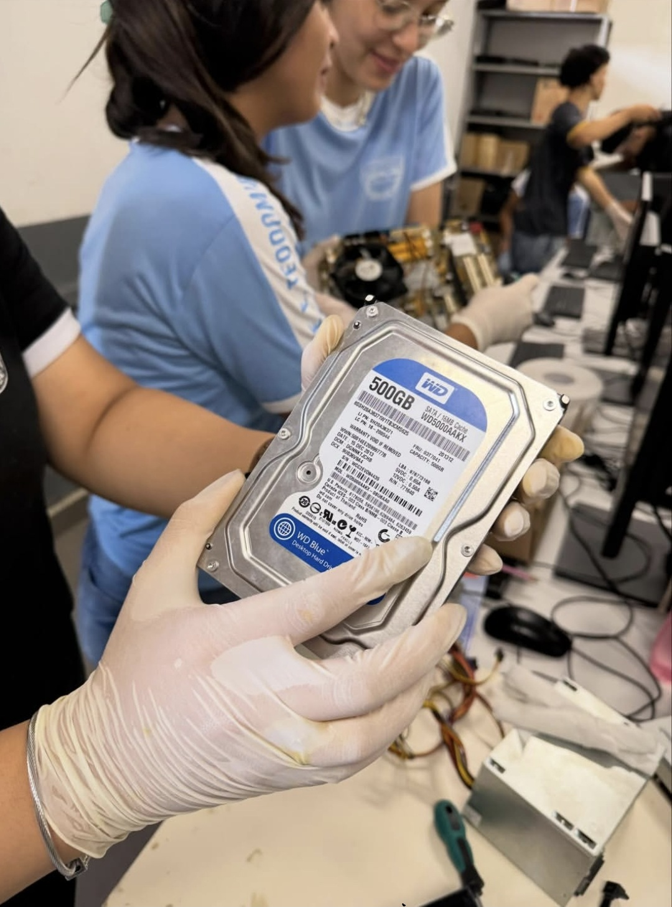
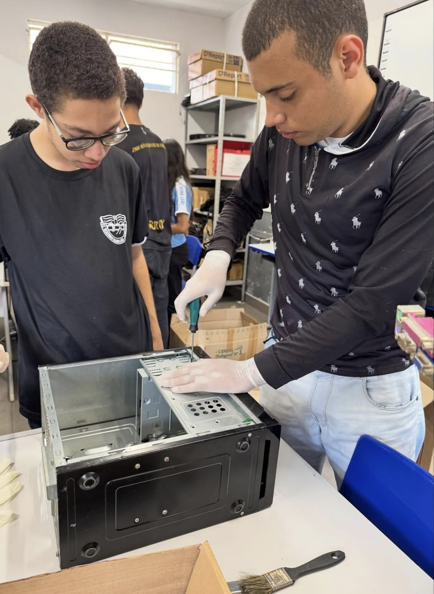
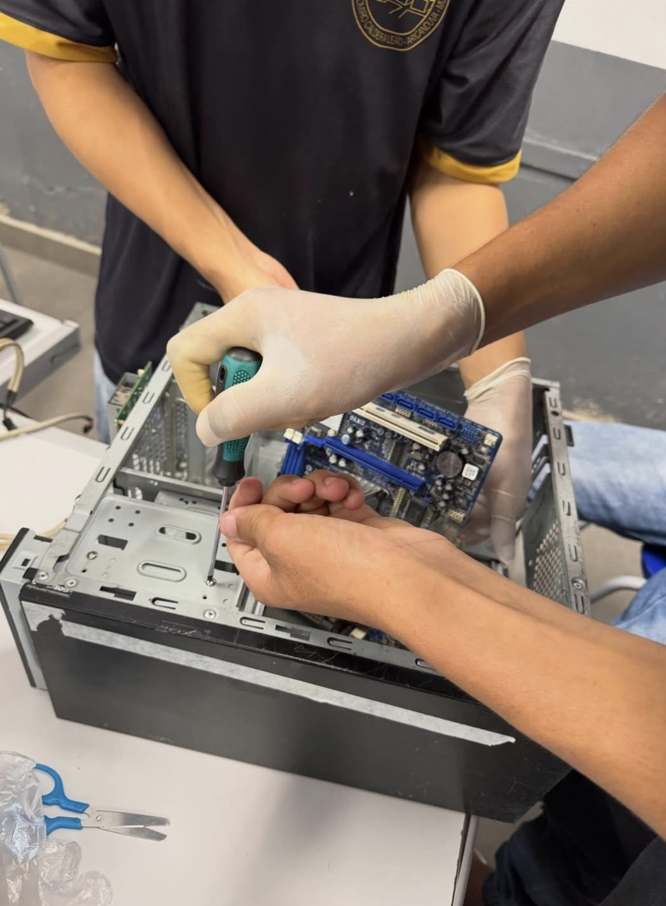
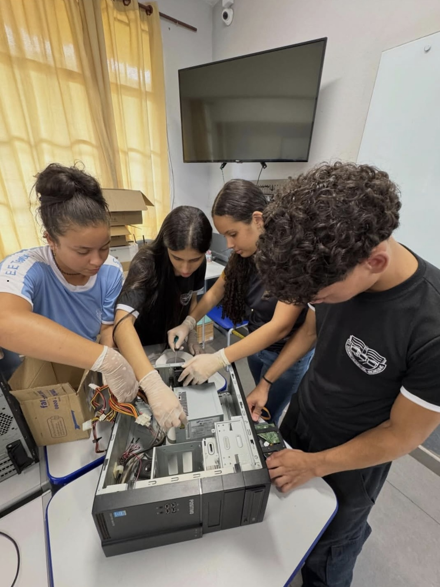
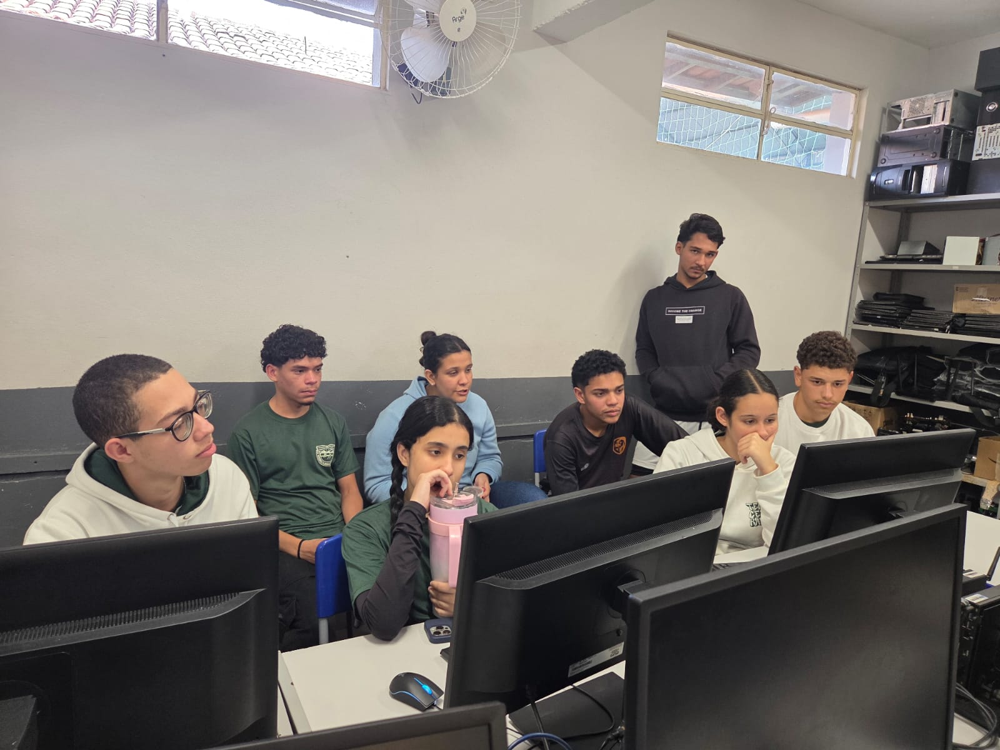
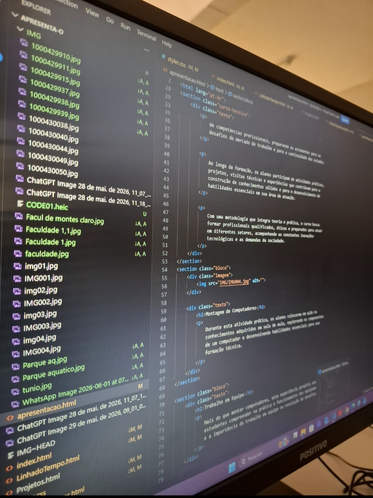

O Curso Técnico oferece uma formação voltada para o desenvolvimento de competências profissionais, preparando os estudantes para os desafios do mercado de trabalho e para a continuidade dos estudos.
Ao longo da formação, os alunos participam de atividades práticas, projetos, visitas técnicas e experiências que contribuem para a construção de conhecimentos sólidos e para o desenvolvimento de habilidades essenciais em sua área de atuação.
Com uma metodologia que integra teoria e prática, o curso busca formar profissionais qualificados, éticos e preparados para atuar em diferentes setores, acompanhando as constantes inovações tecnológicas e as demandas da sociedade.

Durante esta atividade prática, os alunos colocaram em ação os conhecimentos adquiridos em sala de aula, explorando os componentes de um computador e desenvolvendo habilidades essenciais para sua formação técnica.
Mais do que montar computadores, esta experiência permitiu aos estudantes compreender na prática o funcionamento dos equipamentos e a importância do trabalho em equipe na resolução de desafios.


Através da prática, os alunos tiveram a oportunidade de ampliar seus conhecimentos técnicos, fortalecendo competências que serão fundamentais em sua trajetória profissional.
Transformando teoria em prática, os alunos participaram de uma atividade que estimulou a aprendizagem, a colaboração e o contato direto com a tecnologia.


A programação é uma área fundamental da tecnologia, permitindo a criação de sistemas, aplicativos e soluções
digitais.
Por meio dela, os alunos desenvolvem o raciocínio lógico, a criatividade e a capacidade de
resolver problemas de forma eficiente.
Ao longo dos três anos do Curso Técnico, aprendemos programação, desenvolvemos projetos e enfrentamos desafios que fortaleceram nosso conhecimento, raciocínio lógico e preparação para o futuro profissional.
